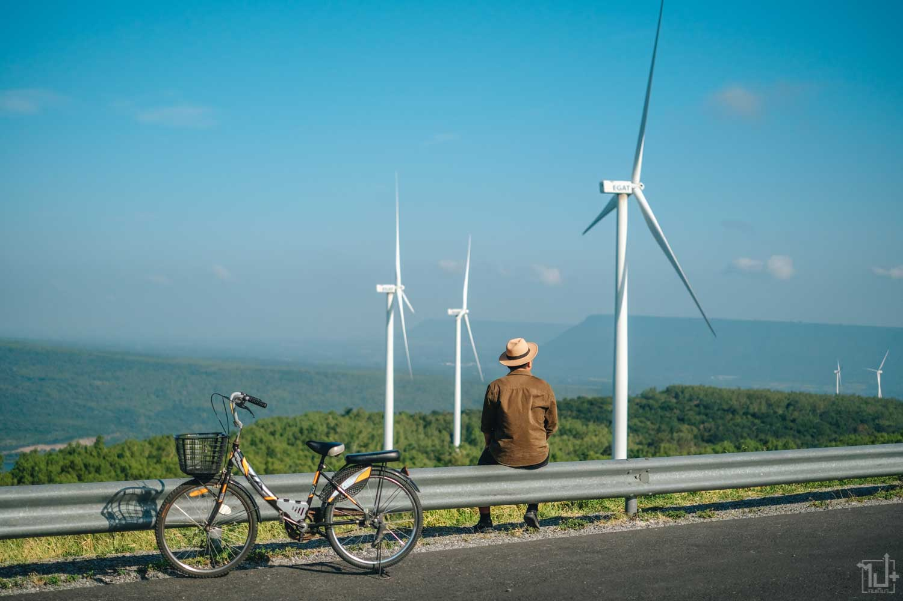
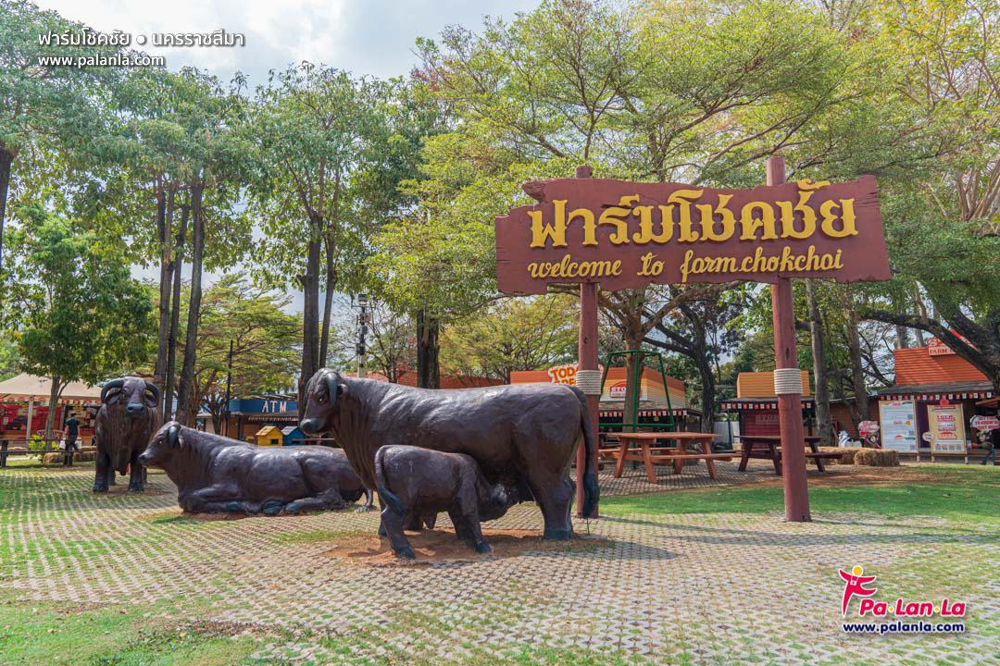
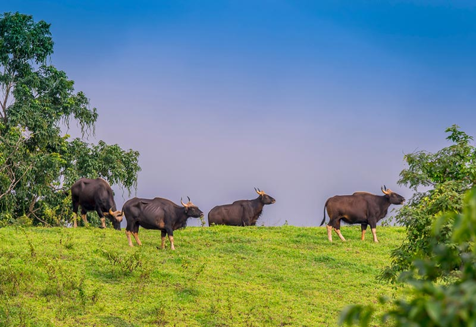
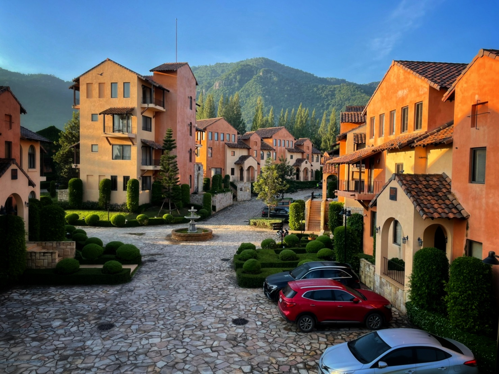
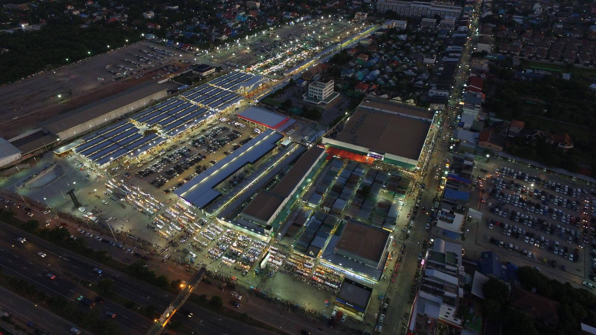

สถานที่ท่องเที่ยว

อนุสาวรีย์ท้าวสุรนารี
อนุสาวรีย์ท้าวสุรนารีตั้งอยู่ในเขตเมืองโคราช เป็นสถานที่สำคัญทางประวัติศาสตร์และเป็นจุดศูนย์รวมจิตใจของชาวนครราชสีมา อนุสาวรีย์นี้สร้างขึ้นเพื่อรำลึกถึงความกล้าหาญของท้าวสุรนารี หรือที่ชาวบ้านเรียกกันว่า ย่าโม หญิงไทยผู้มีบทบาทสำคัญในการปกป้องเมืองโคราชจากกองทัพเจ้าอนุวงศ์แห่งเวียงจันทน์ในปี พ.ศ. 2369
จุดเด่น:
รูปปั้นทองสัมฤทธิ์ของย่าโมในชุดไทยยืนถือดาบ เป็นสัญลักษณ์ของความกล้าหาญและความเสียสละ บริเวณรอบอนุสาวรีย์มีลานกว้างที่ผู้คนมักมากราบไหว้ด้วยการถวายพวงมาลัยหรือผูกผ้าสี เพื่อขอพรในด้านความสำเร็จและความเป็นสิริมงคล
กิจกรรมที่นิยม:
ผู้คนมักเดินทางมาที่นี่เพื่อไหว้สักการะ ขอพร และทำพิธีแก้บน เช่น รำแก้บนหรือตั้งเครื่องเซ่น โดยเฉพาะในช่วงเทศกาลสำคัญ บริเวณโดยรอบยังมีร้านขายของที่ระลึก และร้านอาหารพื้นเมืองที่น่าสนใจ
เวลาเปิด-ปิด:
เปิดให้เข้าชมตลอดเวลา แต่ช่วงเช้าถึงเย็นเป็นเวลาที่คึกคักที่สุด

เขายายเที่ยง
เขายายเที่ยงเป็นแหล่งท่องเที่ยวทางธรรมชาติยอดนิยม ตั้งอยู่ในอำเภอปากช่อง โคราช ที่นี่มีจุดเด่นที่ความงดงามของธรรมชาติ ทิวทัศน์เขียวขจี และบรรยากาศเงียบสงบเหมาะสำหรับการพักผ่อน
จุดเด่น:
มีอ่างเก็บน้ำขนาดใหญ่ที่ล้อมรอบด้วยภูเขา เป็นจุดชมวิวที่สวยงาม เหมาะสำหรับการถ่ายภาพและนั่งพักผ่อน
เขายายเที่ยงยังเป็นพื้นที่ที่มีการติดตั้งกังหันลมขนาดใหญ่ ซึ่งสร้างความแปลกตาและเป็นจุดเช็คอินยอดฮิต
กิจกรรม:
ปั่นจักรยานหรือเดินเล่นไปตามเส้นทางธรรมชาติ
ตั้งแคมป์พักแรมในบริเวณที่จัดเตรียมไว้สำหรับนักท่องเที่ยว
ชมพระอาทิตย์ขึ้นและตกที่จุดชมวิว ซึ่งเป็นช่วงเวลาที่นักท่องเที่ยวไม่ควรพลาด
ข้อมูลเพิ่มเติม:
ที่นี่เหมาะสำหรับผู้ที่ต้องการสัมผัสธรรมชาติแบบเรียบง่าย หลีกหนีความวุ่นวายในเมือง

ฟาร์มโชคชัย
ฟาร์มโชคชัยตั้งอยู่ในอำเภอปากช่อง และถือว่าเป็นหนึ่งในฟาร์มโคนมที่ใหญ่ที่สุดในเอเชียตะวันออกเฉียงใต้ ฟาร์มนี้มีชื่อเสียงด้านการบริหารจัดการที่ทันสมัยและการเปิดฟาร์มให้ประชาชนทั่วไปได้สัมผัสชีวิตชนบทอย่างใกล้ชิด
จุดเด่น:
การจัดทัวร์ฟาร์มสำหรับนักท่องเที่ยว ซึ่งครอบคลุมการชมกระบวนการเลี้ยงโคนม การรีดนมวัว และการผลิตผลิตภัณฑ์จากนม
กิจกรรมสำหรับครอบครัว เช่น ขี่ม้า ให้อาหารสัตว์ และการสาธิตการทำไอศกรีมสด
อาหารและเครื่องดื่ม:
นักท่องเที่ยวสามารถลิ้มลองอาหารคุณภาพสูงจากวัตถุดิบในฟาร์ม เช่น สเต็กเนื้อคุณภาพ ไอศกรีม และผลิตภัณฑ์จากนมที่ผลิตสดใหม่
เหมาะสำหรับ:
ครอบครัว คู่รัก และกลุ่มเพื่อนที่ต้องการสัมผัสวิถีชีวิตฟาร์มในบรรยากาศที่อบอุ่นและผ่อนคลาย

เขาแผงม้า
เขาแผงม้าเป็นแหล่งท่องเที่ยวเชิงอนุรักษ์ในเขตวังน้ำเขียว โคราช ซึ่งมีชื่อเสียงในฐานะที่เป็นแหล่งที่อยู่อาศัยของกระทิงตามธรรมชาติ
จุดเด่น:
จุดชมวิวที่สามารถมองเห็นฝูงกระทิงที่หากินอยู่ในพื้นที่เปิดโล่ง นักท่องเที่ยวสามารถชมกระทิงได้อย่างใกล้ชิดผ่านกล้องส่องทางไกล
บรรยากาศที่เงียบสงบและอุดมสมบูรณ์ด้วยธรรมชาติ เหมาะสำหรับการพักผ่อนและเดินเล่นในพื้นที่ใกล้เคียง
ช่วงเวลาที่เหมาะสม:
ช่วงเช้าตรู่และช่วงเย็นเป็นเวลาที่กระทิงมักออกมาหากิน นักท่องเที่ยวควรวางแผนการเดินทางให้เหมาะสม
กิจกรรมเพิ่มเติม:
สำหรับผู้รักการเดินป่า สามารถเดินสำรวจเส้นทางธรรมชาติที่เขาแผงม้าจัดเตรียมไว้ เพื่อสัมผัสธรรมชาติและสัตว์ป่าในพื้นที่

Toscana Valley
Toscana Valley เป็นรีสอร์ทและโครงการที่พักสุดหรูในเขาใหญ่ ที่ได้รับแรงบันดาลใจจากสถาปัตยกรรมสไตล์ทัสคานีในอิตาลี
จุดเด่น:
การออกแบบที่โดดเด่นด้วยอาคารสถาปัตยกรรมสไตล์ยุโรป มีหอคอย โบสถ์ และถนนปูหิน ให้ความรู้สึกเหมือนอยู่ในหมู่บ้านชนบทของอิตาลี
บรรยากาศหรูหราและเงียบสงบท่ามกลางธรรมชาติ
กิจกรรม:
สนามกอล์ฟระดับมาตรฐาน
ร้านอาหาร คาเฟ่ และสปาสุดหรู
จุดถ่ายรูปที่สวยงามสำหรับคู่รักและครอบครัว
เหมาะสำหรับ:
Toscana Valley เหมาะสำหรับคู่รัก ครอบครัว และผู้ที่มองหาสถานที่พักผ่อนสุดหรูท่ามกลางธรรมชาติ

ตลาดเซฟวัน
ตลาดเซฟวันเป็นตลาดนัดที่ใหญ่ที่สุดในโคราช และเป็นที่นิยมอย่างมากในหมู่นักท่องเที่ยวและคนท้องถิ่น
จุดเด่น:
ตลาดมีโซนหลากหลาย เช่น โซนเสื้อผ้า ของใช้ ของตกแต่งบ้าน สัตว์เลี้ยง และสินค้าแฟชั่น รวมถึงโซนอาหารที่มีอาหารท้องถิ่นและอาหารนานาชาติให้เลือกชิมมากมาย
บรรยากาศ:
คึกคักและเต็มไปด้วยชีวิตชีวา โดยเฉพาะในช่วงเย็น นักท่องเที่ยวสามารถเดินเล่น ช้อปปิ้ง และลองชิมอาหารท้องถิ่นในบรรยากาศสบายๆ
เวลาทำการ:
เปิดทุกวันตั้งแต่ 16:00 - 22:00 น. เหมาะสำหรับการเดินเล่นในช่วงเย็น